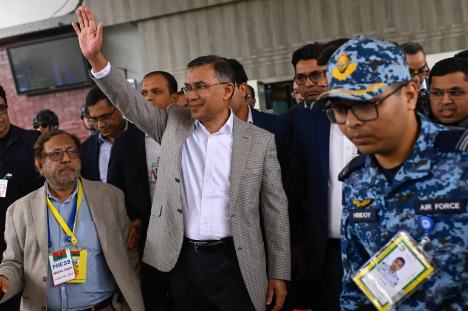

Opposition leader Tarique Rahman returns to Bangladesh after 17 years
2025, December 28

Opposition leader Tarique Rahman returns to Bangladesh after 17 years
2025, December 28
Bangladesh
Tarique Rahman, the acting chairman of the Bangladesh Nationalist Party (BNP) returned to Bangladesh on December 25, 2025, landing in Dhaka after 17 years in self-imposed exile in London. His arrival marks a significant development in the country's political landscape following the ouster of former Prime Minister Sheikh Hasina in August 2024. Rahman is the son of Khaleda Zia, the official chairperson of the party and former Prime Minister of Bangladesh.Upon landing at Hazrat Shahjalal International Airport in Dhaka, Rahman was greeted by thousands of Bangladesh Nationalist Party supporters amid tight security. Accompanied by his wife, Zubaida Rahman, and daughter, Zaima Rahman, he addressed a rally, emphasizing national unity, inclusivity across religious lines, and the vision of a democratic and economically strong Bangladesh. He drew parallels to the country's 1971 war of independence.
Rahman, aged 60, left Bangladesh in 2008 for medical treatment after being released on bail following 18 months in detention during the military-backed government's rule from 2006 to 2008. He was convicted in absentia of charges including corruption, money laundering, and involvement in a 2004 grenade attack on a political rally for his political rival, Sheikh Hasina. These convictions were overturned or stayed after Hasina's government's fall.
His return comes amid preparations for general elections scheduled for early 2026, under an interim government led by Nobel laureate Muhammad Yunus. The elections follow a student-led uprising in 2024 that resulted in Hasina's removal and her subsequent flight to India. The protests, initially sparked by opposition to a job quota system, escalated into broader anti-government demonstrations, leading to an estimated 1,400 deaths according to United Nations figures. Hasina has since been sentenced to death in absentia for crimes against humanity related to the crackdown.
According to a December poll by the International Republican Institute, the BNP is the frontrunner for the election with 30 percent support. The party has recently distanced itself from allies like Jamaat-e-Islami to adopt a more centrist approach. However, challenges remain, including integrating party factions, maintaining law and order, and addressing potential unrest from Awami League supporters. The Awami League was not allowed to participate in the elections.
Rahman's mother, Khaleda Zia, 80, is hospitalised in critical condition since November 2025. She was the BNP's acting chairman since 2018 and was jailed most of the times during Hasina's administration.